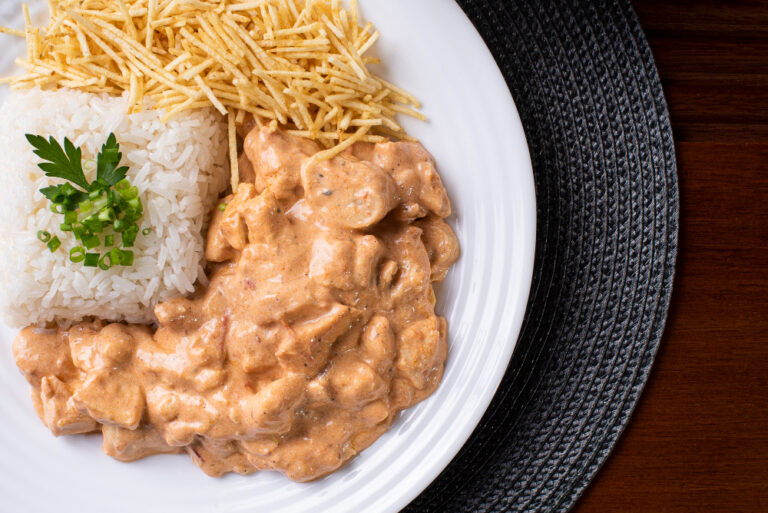

Melhor strogonoff de Pindamonhangaba!

Descrição...
Ingredientes necessários:
- 500g de carne bovina (filé mignon, alcatra ou patinho), cortada em tiras ou cubos
- 1 colher (sopa) de manteiga ou azeite
- 1 cebola média picada
- 2 dentes de alho amassados ou picados
- 1 pitada de sal e pimenta-do-reino a gosto
- 100g de champignon em conserva, fatiado (opcional)
- 3 colheres (sopa) de ketchup
- 1 colher (sopa) de mostarda
- 1/2 xícara (chá) de molho de tomate ou extrato de tomate (opcional, para cor e sabor)
- 1 lata de creme de leite (pode ser com ou sem soro, dependendo da preferência)
- Salsinha e cebolinha picadas a gosto para finalizar (opcional)
Modo de preparo:
- Preparar a carne: Tempere a carne com sal e pimenta-do-reino a gosto.
- Dourar a carne: Em uma panela ou frigideira grande e bem quente, derreta a manteiga e adicione um fio de azeite. Adicione a carne em pequenas porções para que ela sele e não solte muita água. Reserve a carne depois de dourada.
- Refogar a cebola e alho: Na mesma panela, se necessário, adicione um pouco mais de azeite e refogue a cebola picada até ficar transparente. Acrescente o alho amassado e frite por mais cerca de 30 segundos, até perfumar.
- Adicionar temperos e cogumelos: Retorne a carne à panela. Adicione o ketchup, a mostarda e o molho/extrato de tomate. Misture bem e cozinhe por alguns minutos para apurar o sabor. Acrescente os champignons fatiados, se estiver usando.
- Finalizar com creme de leite: Reduza o fogo para baixo e adicione o creme de leite. Misture delicadamente até o molho aquecer e ficar cremoso, mas não deixe ferver após adicionar o creme de leite para não talhar.
- Servir: Prove e acerte o sal, se necessário. Finalize com salsinha e cebolinha picadas e sirva imediatamente, tradicionalmente acompanhado de arroz branco e batata palha.
Gostaria de aprender mais receitas?